# Importing necessary libraries
import matplotlib.pyplot as plt
import numpy as np
# Generating synthetic time-series data
time = np.arange(0, 10, 0.1)
stock_prices = np.sin(time) + np.random.normal(0, 0.2, len(time))
# Creating a line plot
plt.figure(figsize=(10, 6))
plt.plot(time, stock_prices, label='Stock Prices', color='b', linestyle='-', marker='o')
plt.xlabel('Time')
plt.ylabel('Stock Prices')
plt.title('Stock Price Trends Over Time')
plt.legend()
plt.grid()
plt.show()Comprehensive Data Visualization with Matplotlib and Seaborn
Colab Link: Click here!
Introduction
Data visualization is an essential tool in the field of data analysis and interpretation. It allows us to gain insights from complex data by representing it in a visual format. In this Jupyter notebook, we will explore various data visualization techniques using Matplotlib and Seaborn, two popular Python libraries. These techniques cater to the needs of Computer Science and Data Science students, helping them understand and utilize visualization methods effectively.
Table of Contents
1: Basic Plots
In this section, we will delve into a comprehensive exploration of basic data visualization techniques, collectively known as “Basic Plots.” These fundamental visualizations are crucial for understanding data trends, relationships, and distributions. We will cover Line Plots, Scatter Plots, Bar Plots, and Histograms, each offering a unique perspective on data representation.
1.1: Line Plot (Visualizing Trends Over Time)
Line plots are a fundamental tool for visualizing data trends, particularly those that evolve over time. In this subsection, we will use a synthetic time-series dataset, such as stock market data, to illustrate the significance of line plots.
Creating a Line Plot:
We will begin by generating synthetic time-series data, including time points and corresponding stock prices. Then, we will use Matplotlib to craft an informative line plot.
The resulting line plot provides a visual representation of stock price trends over time. It offers customization options such as line style, color, and labels to enhance clarity.
Interpreting Line Plots:
Interpreting a line plot involves assessing various aspects:
Trends: Observe the direction of the line to identify upward, downward, or stable trends in the data.
Amplitude: The vertical distance of the line from the baseline signifies the magnitude of changes in the variable being measured.
Cyclic Patterns: Some time-series data exhibit cyclic patterns or seasonality, which can be spotted in the plot.
Variability: Variations in the data are reflected in the fluctuations of the line.
Line plots are essential for detecting temporal patterns, understanding data evolution, and making informed decisions based on historical data.
1.2: Scatter Plot (Visualizing Relationships Between Variables)
Scatter plots are valuable for visualizing the relationships between two numeric variables. In this subsection, we will use synthetic data representing height vs. weight to demonstrate the utility of scatter plots.
Creating a Scatter Plot:
We will generate synthetic height and weight data and then employ Matplotlib to create a comprehensive scatter plot.
# Generating synthetic height vs. weight data
height = np.random.normal(170, 10, 100)
weight = height * 0.6 + np.random.normal(0, 5, 100)
# Creating a scatter plot
plt.figure(figsize=(10, 6))
plt.scatter(height, weight, label='Height vs. Weight', color='r', marker='o')
plt.xlabel('Height (cm)')
plt.ylabel('Weight (kg)')
plt.title('Relationship between Height and Weight')
plt.legend()
plt.grid()
plt.show()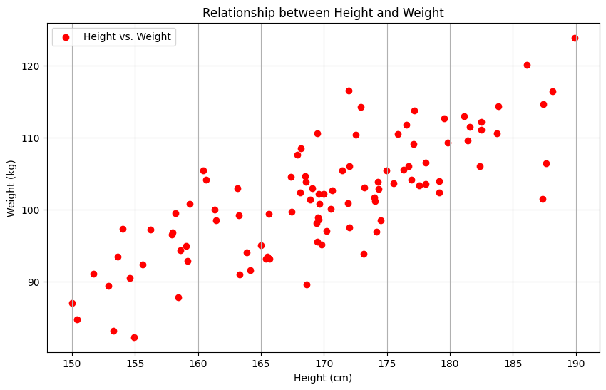
The scatter plot visually illustrates the relationship between height and weight, allowing for the identification of patterns and correlations.
Interpreting Scatter Plots:
Interpreting a scatter plot involves considering several key aspects:
Trend Direction: Determine if the points exhibit an upward, downward, or random trend.
Scatter Density: The density of points in different areas of the plot indicates data concentration.
Outliers: Identify any data points that deviate significantly from the general pattern, which might be outliers.
Correlation: Assess the overall direction and strength of the relationship between the variables.
Scatter plots are essential for understanding the correlation between two variables and identifying potential outliers or trends.
1.3: Bar Plot (Visualizing Categorical Data)
Bar plots are instrumental for representing categorical data. In this subsection, we will use synthetic sales data by product category to demonstrate the effectiveness of bar plots.
Creating a Bar Plot:
We will generate synthetic sales data categorized by product type and then create a bar plot using Matplotlib.
# Generating synthetic sales data by product category
categories = ['Electronics', 'Clothing', 'Books', 'Home Decor']
sales = [1200, 800, 1500, 900]
# Creating a bar plot
plt.figure(figsize=(10, 6))
plt.bar(categories, sales, color='g', alpha=0.7)
plt.xlabel('Product Categories')
plt.ylabel('Sales')
plt.title('Sales by Product Category')
plt.grid(axis='y')
plt.show()The bar plot visually represents the sales data by product category, offering insights into categorical data representation.
Interpreting Bar Plots:
Interpreting a bar plot involves considering the following aspects:
Category Comparison: Compare the heights of bars to understand variations in sales among different categories.
Categorical Representation: Observe how categories are represented on the x-axis.
Color Usage: Color can be utilized to highlight specific categories or add visual appeal to the plot.
Stacked vs. Grouped Bars: Depending on the data representation, bars can be stacked or grouped for better comprehension.
Bar plots are essential for comparing categorical data and understanding the distribution of values within categories.
1.4: Histogram (Visualizing Data Distribution)
Histograms are powerful tools for visualizing the distribution of a single variable. In this subsection, we will use synthetic exam score data to create a histogram.
Creating a Histogram:
We will generate synthetic exam scores and then employ Matplotlib to create an informative histogram.
# Generating synthetic exam score data
exam_scores = np.random.normal(70, 10, 300)
# Creating a histogram
plt.figure(figsize=(10, 6))
plt.hist(exam_scores, bins=20, color='purple', edgecolor='black', alpha=0.7)
plt.xlabel('Exam Scores')
plt.ylabel('Frequency')
plt.title('Distribution of Exam Scores')
plt.grid(axis='y')
plt.show()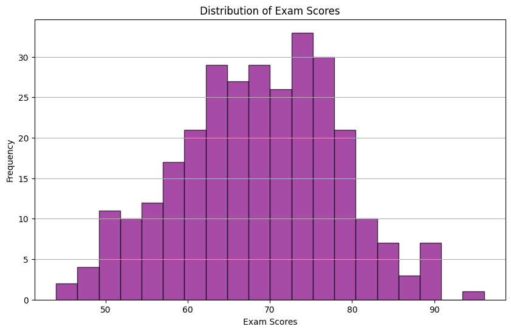
The histogram visually represents the distribution of exam scores, offering customization options for bin size and normalization.
Interpreting Histograms:
Interpreting a histogram involves considering several key aspects:
Data Distribution: Assess whether the data is normally distributed, skewed, or exhibits other patterns.
Central Tendency: Identify the central tendency of the data, such as the mean or median.
Dispersion: Examine the spread or variability of the data.
Bin Width: The width of histogram bins can affect the visual representation of the distribution.
Histograms are essential for understanding the distribution of a single variable and identifying patterns in the data.
2: Statistical Plots
In this section, we will dive into a comprehensive exploration of statistical data visualization techniques, collectively known as “Statistical Plots.” These visualizations are particularly suited for gaining insights into data distributions, identifying outliers, and understanding the central tendencies and variations within datasets. We will cover Box Plots, Violin Plots, and Swarm Plots, each offering a unique perspective on data distribution and statistical characteristics.
2.1: Box Plot (Visualizing Distribution Characteristics)
Box plots, often referred to as box-and-whisker plots, are powerful tools for visualizing the distribution and central tendencies of a dataset. They provide valuable information about the quartiles, outliers, and the spread of data. To illustrate the utility of box plots, we will utilize a synthetic dataset representing income distribution.
Creating a Box Plot:
We will commence by generating synthetic income distribution data and then proceed to create an informative box plot using Matplotlib.
# Importing necessary libraries
import matplotlib.pyplot as plt
import numpy as np
# Generating synthetic income distribution data
income_data = np.random.normal(50000, 10000, 500)
# Creating a box plot
plt.figure(figsize=(10, 6))
plt.boxplot(income_data, vert=False, patch_artist=True, boxprops=dict(facecolor='lightblue'))
plt.xlabel('Income')
plt.title('Income Distribution')
plt.grid(axis='x')
plt.show()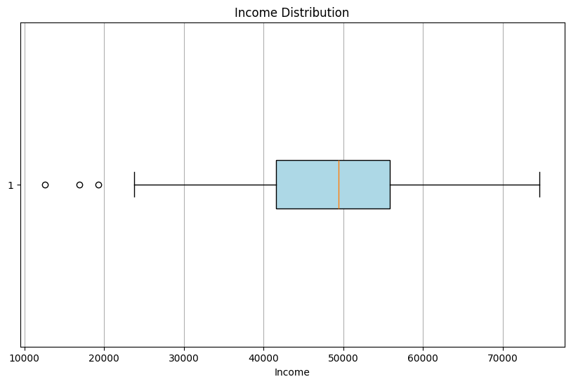
The resulting box plot offers an intuitive representation of income distribution, where the box’s boundaries denote the interquartile range, the median is indicated by the central line, and whiskers extend to minimum and maximum values. The use of color adds an additional layer of visualization.
Interpreting Box Plots:
Interpreting a box plot involves analyzing several key aspects:
Median (Q2): The central line inside the box represents the median income, providing insight into the dataset’s central tendency.
Interquartile Range (IQR): The span of the box represents the IQR, indicating the spread of data between the 25th and 75th percentiles.
Whiskers: The whiskers extend from the box to the minimum and maximum values within the dataset, highlighting potential outliers.
Outliers: Any data points beyond the whiskers are considered outliers, which may warrant further investigation.
Box plots are valuable for comparing the distributions of different datasets and identifying variations in data characteristics.
2.2: Violin Plot (Combining Box Plot and KDE)
Violin plots are a hybrid of box plots and Kernel Density Estimation (KDE) plots, offering a more detailed view of data distribution. These plots are especially useful when you need to visualize the shape and density of the dataset. To demonstrate the capabilities of violin plots, we will continue using the synthetic income distribution data.
Creating a Violin Plot:
We will take the income distribution data and craft a violin plot that combines the benefits of box plots and KDE to provide a richer representation.
# Creating a violin plot
plt.figure(figsize=(10, 6))
plt.violinplot(income_data, vert=False, showmedians=True, showextrema=True)
plt.xlabel('Income')
plt.title('Income Distribution (Violin Plot)')
plt.grid(axis='x')
plt.show()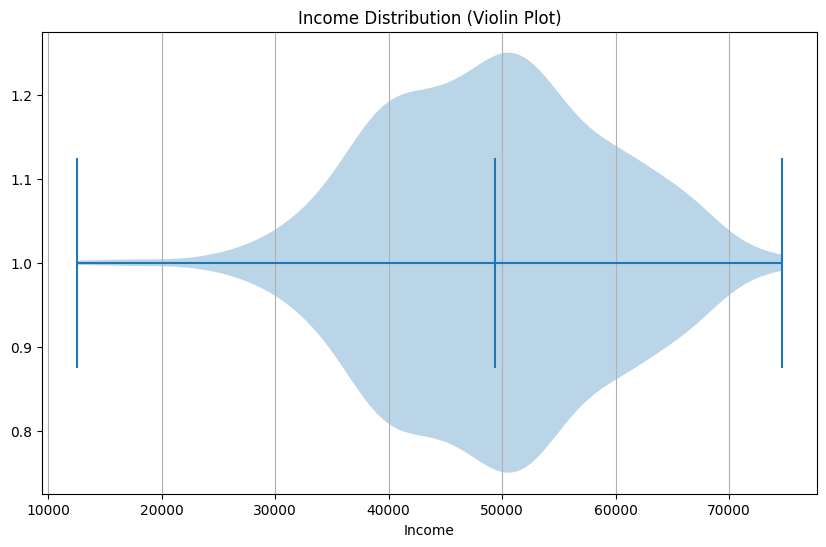
In the resulting plot, you can observe a combination of the classic box plot and a KDE representation, providing a more comprehensive understanding of data distribution.
Interpreting Violin Plots:
When interpreting violin plots, consider the following:
Width of the Violin: The width of the violin at any given value indicates the density of data points at that level. Wider sections represent higher data density.
Box within the Violin: Just like in a box plot, the central box in the violin plot represents the IQR, and the central line is the median.
Violin Extrema: The extrema, represented as small lines or points, highlight the minimum and maximum values in the dataset.
Violin plots are effective for capturing both the central tendencies and the variations in data, making them a powerful tool in exploratory data analysis.
2.3: Swarm Plot (Visualizing Categorical Data)
Swarm plots are excellent for visualizing categorical data with multiple categories, showcasing individual data points within these categories. To exemplify the utility of swarm plots, we will employ synthetic survey response data, which is often categorical and offers a prime use case for this type of visualization.
Creating a Swarm Plot:
We will generate synthetic survey response data and construct a swarm plot using the Seaborn library, which excels in creating aesthetically pleasing and informative categorical plots.
# Generating synthetic survey response data
import seaborn as sns
import matplotlib.pyplot as plt
categories = ['Category A', 'Category B', 'Category C', 'Category D']
responses = np.random.choice(categories, size=100)
# Creating a swarm plot
plt.figure(figsize=(10, 6))
sns.swarmplot(x=responses, y=np.random.normal(0, 1, 100), palette='Set2', hue=responses, legend=False)
plt.xlabel('Survey Categories')
plt.ylabel('')
plt.title('Survey Responses')
plt.grid(axis='y')
plt.show()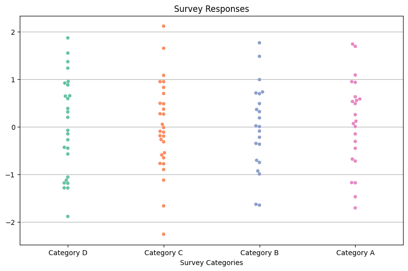
The resulting swarm plot showcases individual survey responses distributed along the categorical axis, revealing the distribution of data points within each category.
Interpreting Swarm Plots:
Swarm plots are particularly useful for:
Visualizing Distribution: The positions of individual data points offer a clear view of how responses are distributed within each category.
Identifying Clustering: Patterns or clustering of responses within categories can be observed, aiding in the identification of trends or commonalities among responses.
Swarm plots are an excellent choice when working with categorical data and seeking insights into the distribution and clustering of responses.
3: Matrix Plots
Matrix plots are essential for visualizing relationships and patterns in data, particularly when dealing with multivariate datasets. This section will provide an in-depth exploration of matrix plots, focusing on Heatmaps and Clustermaps. These visualization techniques offer a comprehensive view of data interactions and similarities, aiding in the discovery of hidden insights within complex datasets.
3.1: Heatmap (Visualizing Correlations)
Heatmaps are powerful tools for visualizing correlation matrices of variables. These visualizations allow us to gain insights into how variables interact with each other, identify patterns, and assess the strength and direction of these relationships. For our demonstration, we will create a synthetic correlation matrix and generate an informative heatmap.
Creating a Heatmap:
We begin by generating a synthetic correlation matrix and then proceed to create a compelling heatmap using Seaborn.
# Importing necessary libraries
import matplotlib.pyplot as plt
import seaborn as sns
import numpy as np
# Generating a synthetic correlation matrix
correlation_matrix = np.corrcoef(np.random.rand(5, 5))
# Creating a heatmap
plt.figure(figsize=(8, 6))
sns.heatmap(correlation_matrix, annot=True, cmap='coolwarm', cbar=True)
plt.title('Correlation Heatmap')
plt.show()
The resulting heatmap visually represents correlations between variables. It uses a color map to accentuate the strength of the relationships. In this example, warmer colors indicate positive correlations, cooler colors represent negative correlations, and the annotation provides precise correlation values.
Interpreting Heatmaps:
Interpreting a heatmap involves analyzing the following aspects:
Color Intensity: The intensity of color at the intersection of two variables signifies the strength of their correlation. Darker colors represent stronger correlations.
Color Direction: Warm colors (e.g., red and orange) indicate positive correlations, while cool colors (e.g., blue and green) denote negative correlations.
Annotation: Annotation within the heatmap provides specific correlation values, enabling precise quantitative assessment.
Heatmaps are instrumental in identifying significant relationships in datasets, making them invaluable in fields like finance, biology, and social sciences.
3.2: Clustermap (Hierarchical Clustering)
Clustermaps are a specialized form of heatmap that combines data visualization with hierarchical clustering. They are exceptionally useful for grouping and ordering data based on similarity, revealing underlying structures in the dataset. Dendrograms are often employed to illustrate the clustering hierarchy.
Creating a Clustermap:
We will utilize the same synthetic correlation matrix to create a clustermap, which employs hierarchical clustering to group and order data.
# Creating a clustermap without specifying cbar_pos
sns.clustermap(correlation_matrix, annot=True, cmap='coolwarm')
plt.title('Clustermap of Correlation Matrix')
plt.show()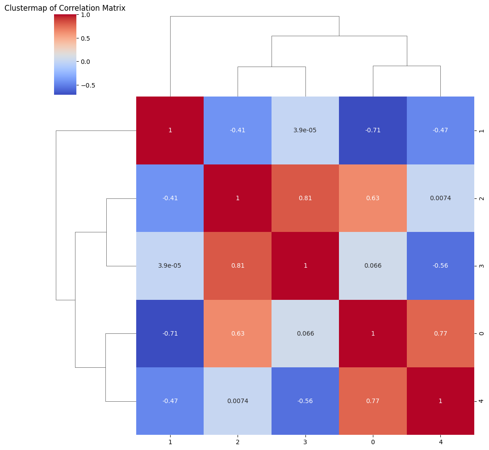
The clustermap visually presents the clustered relationships among variables. It employs dendrograms to showcase the hierarchical structure within the data. By using dendrograms, the clustermap provides insights into how data points are grouped based on their similarity.
Interpreting Clustermaps:
Interpreting a clustermap involves focusing on the following components:
Dendrograms: Dendrograms in the row and column margins show the hierarchical structure of clustered data points. The closer data points are on the dendrogram, the more similar they are.
Ordering: The order of rows and columns reflects the clustering hierarchy, allowing us to identify groups of variables with similar relationships.
Clustermaps are a valuable tool for identifying and visualizing patterns within datasets, making them indispensable in fields such as genomics and social network analysis. They help unveil the underlying structure of complex data, enabling informed decision-making and insightful data exploration.
4: Distribution Plots
In this section, we will delve into the realm of distribution plots, a set of visualization techniques designed to provide insights into the distribution of data. These plots are invaluable for understanding the underlying structure of datasets, exploring the shape of distributions, and detecting important statistical properties. We will explore two distribution plots: Kernel Density Estimate (KDE) Plot and Pair Plot.
4.1: Kernel Density Estimate (KDE) Plot (Visualizing Probability Density)
Kernel Density Estimate (KDE) plots offer an effective means of visualizing the probability density function of a single variable. They provide a smooth representation of data distribution, allowing us to explore underlying patterns and characteristics. To illustrate the utility of KDE plots, we will use a synthetic dataset of exam scores.
Creating a Kernel Density Estimate (KDE) Plot:
Let’s begin by generating synthetic exam score data and then create a KDE plot using Seaborn.
# Importing necessary libraries
import seaborn as sns
import matplotlib.pyplot as plt
import numpy as np
# Generating synthetic exam score data
exam_scores = np.random.normal(75, 10, 200)
# Creating a KDE plot
plt.figure(figsize=(10, 6))
sns.kdeplot(exam_scores, fill=True, color='orange')
plt.xlabel('Exam Scores')
plt.ylabel('Probability Density')
plt.title('Kernel Density Estimate (KDE) of Exam Scores')
plt.grid(axis='y')
plt.show()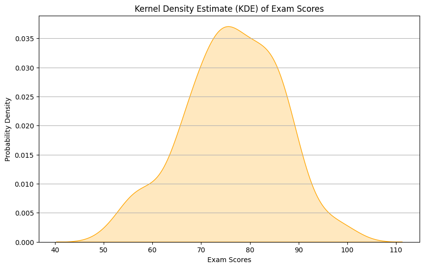
The resulting KDE plot provides a smooth representation of the exam scores’ probability density, highlighting potential peaks and trends in the data. The shade area under the curve represents the estimated probability.
Interpreting KDE Plots:
Interpreting a KDE plot involves recognizing key elements:
Kernel Smoothness: The smoothness of the curve is determined by the choice of the kernel function. Smoother curves indicate a more generalized representation of the data.
Peaks: Peaks in the KDE plot represent modes or significant clusters within the data. These peaks indicate areas where data points are more concentrated.
Tails: The tails of the KDE plot extend towards the data’s minimum and maximum values, providing insights into the data’s spread.
KDE plots are crucial for understanding the underlying data distribution, especially when dealing with single-variable datasets.
4.2: Pair Plot (Exploring Multivariate Relationships)
Pair plots are a powerful tool for exploring the relationships between multiple numeric variables within a dataset. They provide a comprehensive overview of variable interactions, including scatterplots, histograms, and correlation coefficients. To demonstrate the utility of pair plots, we will use a synthetic dataset with multiple features.
Creating a Pair Plot:
Let’s generate synthetic data with multiple numeric features and use Seaborn to create a pair plot.
# Generating synthetic dataset with multiple features
import pandas as pd
data = pd.DataFrame({
'Feature1': np.random.normal(0, 1, 100),
'Feature2': np.random.normal(0, 1, 100),
'Feature3': np.random.normal(0, 1, 100),
'Feature4': np.random.normal(0, 1, 100)
})
# Creating a pair plot
sns.pairplot(data)
plt.suptitle('Pair Plot of Multiple Features')
plt.show()
The resulting pair plot offers a matrix of scatterplots for pairwise variable comparisons, histograms along the diagonal, and correlation coefficients.
Interpreting Pair Plots:
Interpreting a pair plot involves examining various components:
Scatterplots: The scatterplots in the upper and lower triangles of the matrix illustrate the relationships between pairs of variables. They help identify trends and correlations.
Histograms: The diagonal of the pair plot consists of histograms for each variable, revealing the distribution of each feature individually.
Correlation Coefficients: If desired, correlation coefficients can be displayed within the scatterplots, indicating the strength and direction of linear relationships.
Pair plots are instrumental in identifying relationships between variables, detecting outliers, and gaining insights into dataset characteristics.
5: Time Series Plots
Time series data is a fundamental component of various fields, including finance, economics, and environmental sciences. Visualizing time-dependent trends is crucial for understanding patterns, making predictions, and conducting in-depth analyses. In this section, we will explore a range of time series visualization techniques that empower us to decode and interpret the dynamics of temporal data.
5.1: Time Series Plot (Unveiling Temporal Trends)
Time series plots are a go-to choice for unveiling temporal trends in data. By tracking changes over time, we can uncover patterns, fluctuations, and anomalies. For this demonstration, we will employ a synthetic time series dataset representing stock prices over time.
Creating a Time Series Plot:
Let’s initiate our exploration by generating a synthetic time series dataset and crafting an informative time series plot using Matplotlib.
# Importing necessary libraries
import matplotlib.pyplot as plt
import numpy as np
# Generating synthetic time series data
time = np.arange(0, 10, 0.1)
stock_prices = np.sin(time) + np.random.normal(0, 0.2, len(time))
# Creating a time series plot
plt.figure(figsize=(10, 6))
plt.plot(time, stock_prices, label='Stock Prices', color='b', linestyle='-', marker='o')
plt.xlabel('Time')
plt.ylabel('Stock Prices')
plt.title('Stock Price Trends Over Time')
plt.legend()
plt.grid()
plt.show()The resulting time series plot beautifully illustrates stock price trends over time. This visualization is instrumental for detecting long-term trends, seasonal patterns, and short-term fluctuations in time series data.
Interpreting Time Series Plots:
Interpreting time series plots involves analyzing various aspects:
Trends: Examining the overall direction of the time series to identify upward, downward, or stationary trends.
Seasonality: Detecting recurring patterns or cycles within the data, which may occur daily, weekly, monthly, or seasonally.
Volatility: Observing the degree of variability in the data, which is crucial for risk assessment and financial analysis.
Anomalies: Identifying unusual data points that deviate significantly from the expected patterns.
Time series plots are foundational for analyzing historical data and can guide decision-making in areas such as investment and resource allocation.
5.2: AutoCorrelation Plot (Unmasking Time-Dependent Dependencies)
AutoCorrelation plots are essential tools for unveiling time-dependent dependencies in time series data. They help us understand the relationship between a time series and its past observations. In this demonstration, we will utilize a synthetic time series dataset representing monthly sales data.
Creating an AutoCorrelation Plot:
To illustrate the concept of auto-correlation, we will generate synthetic monthly sales data and craft an informative auto-correlation plot using Matplotlib.
# Generating synthetic monthly sales data
months = np.arange(1, 13)
monthly_sales = np.sin(months) + np.random.normal(0, 0.2, 12)
# Creating an auto-correlation plot
plt.figure(figsize=(10, 6))
pd.plotting.autocorrelation_plot(monthly_sales)
plt.xlabel('Lag')
plt.ylabel('Autocorrelation')
plt.title('Autocorrelation Plot of Monthly Sales')
plt.grid(axis='y')
plt.show()The resulting auto-correlation plot unveils insights into the temporal dependencies within the monthly sales data. It is instrumental for identifying seasonal patterns, lags, and potential predictive features.
Interpreting AutoCorrelation Plots:
Interpreting auto-correlation plots involves examining several key components:
Lags: On the x-axis, the lag represents the number of time periods between observations. It helps identify time-dependent relationships.
Autocorrelation Values: The y-axis displays autocorrelation values, which indicate the strength and direction of the relationship. Peaks and valleys in this plot reveal time-dependent patterns.
Seasonality: Peaks at regular intervals in the auto-correlation plot suggest the presence of seasonal patterns. The width of these peaks may reveal the season’s duration.
Auto-correlation plots are indispensable for understanding the time-dependent dynamics of data, identifying seasonality, and guiding the selection of appropriate forecasting models.
6: Geospatial Data Visualization
In this section, we will embark on an in-depth exploration of geospatial data visualization, a crucial domain for understanding and interpreting data in geographic contexts. Geospatial data visualization techniques enable us to represent data with latitude and longitude coordinates, visualize patterns in geographical data, and gain insights into the distribution and relationships of spatial data points. We will cover Scatter Geo Plots and Choropleth Maps, each offering a unique perspective on geospatial data representation.
6.1: Scatter Geo Plot (Mapping Data Points)
Scatter Geo Plots are instrumental in mapping data points with latitude and longitude coordinates onto a geographical map. This visualization technique allows us to observe the spatial distribution of data, identify clusters, and understand the geographical patterns within a dataset.
Creating a Scatter Geo Plot:
To exemplify the usage of Scatter Geo Plots, we will generate synthetic data representing earthquake locations worldwide and visualize them using the scatter geo plot.
# Importing necessary libraries
import matplotlib.pyplot as plt
import numpy as np
# Generating synthetic earthquake location data
latitude = np.random.uniform(-90, 90, 100)
longitude = np.random.uniform(-180, 180, 100)
# Creating a scatter geo plot
plt.figure(figsize=(12, 8))
plt.scatter(longitude, latitude, color='red', alpha=0.7)
plt.xlabel('Longitude')
plt.ylabel('Latitude')
plt.title('Earthquake Locations')
plt.grid()
plt.show()
The scatter geo plot provides a visual representation of earthquake locations, with latitude on the y-axis and longitude on the x-axis. Each data point on the map signifies the location of an earthquake event, and the color (red) distinguishes the data points for easier identification.
Interpreting Scatter Geo Plots:
Interpreting a scatter geo plot involves:
Spatial Distribution: Observing the distribution of data points across the geographical area. Clusters or patterns may indicate regions with a higher concentration of events.
Outliers: Identifying isolated data points that deviate significantly from the main cluster, which may denote unique or extreme events.
Geographic Relationships: Understanding the relationships between data points based on their geographic proximity.
Scatter Geo Plots are vital for understanding and analyzing geospatial data, making them invaluable for applications such as seismology, epidemiology, and environmental studies.
6.2: Choropleth Map (Color-Coded Data Distribution)
Choropleth Maps are a powerful visualization tool for representing geographic data in regions or administrative boundaries. They use color gradients to depict variations in data values across different geographic areas. Choropleth Maps are instrumental for understanding regional disparities, population distributions, and data patterns at a macroscopic level.
Creating a Choropleth Map:
To illustrate the application of Choropleth Maps, we will utilize synthetic population data by country and generate a color-coded map to visualize population distribution.
# Importing necessary libraries
import geopandas as gpd
import matplotlib.pyplot as plt
# Loading the 'naturalearth_lowres' dataset
world = gpd.read_file(gpd.datasets.get_path('naturalearth_lowres'))
# Generating synthetic population data by country
countries = ['India', 'USA', 'China', 'Russia']
population = [1400, 330, 1440, 145]
# Merging the synthetic population data with the geospatial data
world['Population'] = 0 # Initialize the 'Population' column with zeros
# Populate the 'Population' column with synthetic data
for country, pop in zip(countries, population):
world.loc[world['name'] == country, 'Population'] = pop
# Creating a choropleth map
fig, ax = plt.subplots(1, 1, figsize=(12, 8))
world.boundary.plot(ax=ax, linewidth=1)
world.plot(column='Population', cmap='YlOrRd', ax=ax, legend=True)
plt.title('Population by Country')
plt.show()/tmp/ipykernel_88883/2624646566.py:6: FutureWarning: The geopandas.dataset module is deprecated and will be removed in GeoPandas 1.0. You can get the original 'naturalearth_lowres' data from https://www.naturalearthdata.com/downloads/110m-cultural-vectors/.
world = gpd.read_file(gpd.datasets.get_path('naturalearth_lowres'))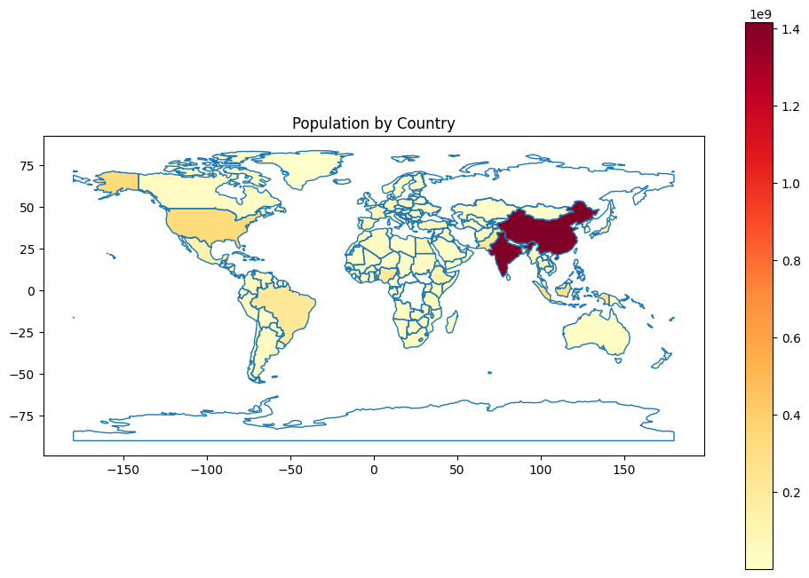
In this example, we load a world map with country boundaries and overlay it with color-coded regions based on population. The color intensity reflects population density, allowing us to visualize variations in population across different countries.
Interpreting Choropleth Maps:
Interpreting a choropleth map involves:
Color Gradients: Understanding the color spectrum used to represent data values. Darker colors typically denote higher values, while lighter colors indicate lower values.
Regional Patterns: Observing variations in data distribution across different regions. Darker regions indicate higher population or data values.
Geographic Trends: Identifying regional trends, disparities, or clusters within the dataset.
Choropleth Maps are indispensable for visualizing data associated with geographic regions, and they find extensive use in fields such as demographics, economics, and public health.
7: 3D Plots (Visualizing Three-Dimensional Data)
In this section, we will embark on an exploration of three-dimensional (3D) data visualization techniques. Visualizing data in three dimensions allows us to understand complex relationships and patterns that cannot be effectively represented in two dimensions. We will cover two fundamental 3D plot types: 3D Scatter Plots and 3D Line Plots.
7.1: 3D Scatter Plot (Visualizing Data Clusters in 3D Space)
3D scatter plots are a valuable tool for visualizing data with three numeric variables. They enable us to explore data points in a three-dimensional space, making it easier to identify clusters, patterns, and relationships among variables.
Creating a 3D Scatter Plot:
To illustrate the concept, we will generate synthetic 3D data and create an insightful 3D scatter plot using Matplotlib. The generated data includes three numeric variables: X, Y, and Z coordinates.
# Importing necessary libraries
import matplotlib.pyplot as plt
import numpy as np
# Generating synthetic 3D data
x = np.random.normal(0, 1, 100)
y = np.random.normal(0, 1, 100)
z = np.random.normal(0, 1, 100)
# Creating a 3D scatter plot
from mpl_toolkits.mplot3d import Axes3D
fig = plt.figure(figsize=(10, 6))
ax = fig.add_subplot(111, projection='3d')
ax.scatter(x, y, z, c='b', marker='o')
ax.set_xlabel('X-axis')
ax.set_ylabel('Y-axis')
ax.set_zlabel('Z-axis')
ax.set_title('3D Scatter Plot')
plt.show()
The 3D scatter plot portrays the data in a three-dimensional space, offering an intuitive perspective on the distribution of data points. The use of color, markers, and labels enhances the visualization.
Interpreting 3D Scatter Plots:
Interpreting a 3D scatter plot involves several key considerations:
Data Clusters: Examine the distribution of data points in 3D space to identify clusters or patterns. Data points that are close to each other may represent a cohesive group or relationship.
Outliers: Look for data points that deviate significantly from the main cluster, as these may indicate outliers or special cases.
Variable Relationships: Understand how the three numeric variables (X, Y, and Z) interact in the 3D space. Observing their positions can reveal relationships and correlations.
3D scatter plots are valuable for a wide range of applications, including data clustering, spatial analysis, and the visualization of multidimensional data.
7.2: 3D Line Plot (Visualizing Data Trajectories in 3D Space)
3D line plots are instrumental in visualizing data trajectories or data with time-dependent coordinates in three-dimensional space. These plots help us understand how data points evolve in a 3D environment.
Creating a 3D Line Plot:
To illustrate the concept, we will generate synthetic 3D trajectory data and create a 3D line plot using Matplotlib. The data includes time, X, Y, and Z coordinates, which can represent a variety of phenomena, such as particle motion, aircraft paths, or spatial trajectories.
# Importing necessary libraries
import matplotlib.pyplot as plt
import numpy as np
# Generating synthetic trajectory data
t = np.linspace(0, 10, 100)
x = np.sin(t)
y = np.cos(t)
z = t
# Creating a 3D line plot
fig = plt.figure(figsize=(10, 6))
ax = fig.add_subplot(111, projection='3d')
ax.plot(x, y, z, c='r')
ax.set_xlabel('X-axis')
ax.set_ylabel('Y-axis')
ax.set_zlabel('Z-axis')
ax.set_title('3D Line Plot')
plt.show()The 3D line plot portrays the trajectory or path of data points in a three-dimensional space. This visualization provides insights into the evolution and spatial characteristics of the data.
Interpreting 3D Line Plots:
Interpreting a 3D line plot involves several key considerations:
Trajectories: Observe the path followed by the data points over time or in 3D space. Identify any loops, patterns, or trends within the trajectories.
Spatial Relationships: Analyze how the data points are distributed in the 3D space. Investigate whether certain regions are densely populated or sparsely populated.
Customization: Explore customization options for line style and color to enhance the clarity and visual appeal of the plot.
3D line plots are invaluable for studying phenomena with three-dimensional characteristics, and they offer a unique perspective on the data’s behavior in space and time.
8: Specialized Plots
In this section, we will explore a range of specialized data visualization techniques that cater to specific data types and analysis needs. Specialized plots offer unique insights and enable the visualization of data that may not be adequately represented by standard plot types. We will delve into Polar Plots, Network Plots, and Word Clouds, each serving distinct purposes in data analysis.
8.1: Polar Plot (Visualizing Circular Data)
Polar plots are a specialized form of data visualization ideal for representing data with angular coordinates, such as wind direction, compass bearings, or circular data. These plots are invaluable for revealing patterns and trends in cyclical datasets.
Creating a Polar Plot:
To illustrate the creation of a polar plot, we will use a synthetic dataset representing wind direction and wind speeds. This plot will provide insights into wind speed distribution in different directions.
# Generating synthetic wind direction data
angles = np.linspace(0, 2 * np.pi, 8)
wind_speeds = np.random.uniform(0, 10, 8)
# Creating a polar plot
plt.figure(figsize=(8, 8))
plt.polar(angles, wind_speeds, label='Wind Speeds', linestyle='-', marker='o')
plt.fill(angles, wind_speeds, alpha=0.3)
plt.thetagrids(angles * 180 / np.pi, labels=['N', 'NE', 'E', 'SE', 'S', 'SW', 'W', 'NW'])
plt.rgrids(np.arange(0, 10, 2), angle=45)
plt.legend()
plt.title('Wind Speeds in Different Directions')
plt.show()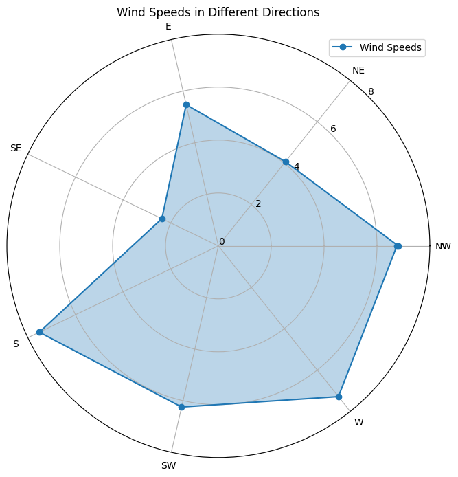
The polar plot above represents wind speeds in various directions. The circular nature of the plot is well-suited for visualizing angular data.
Interpreting Polar Plots:
Interpreting a polar plot involves understanding the following elements:
Angular Coordinates: The angles on the plot’s perimeter represent the directional data, with labels denoting the corresponding directions.
Radial Axes: The radial axes extending from the center indicate values, in this case, wind speeds.
Data Representation: Each data point is plotted at its angular position, and the radial distance from the center corresponds to the value being represented.
Polar plots are excellent for visualizing cyclical patterns and identifying trends in circular data, making them valuable in fields such as meteorology and environmental science.
8.2: Network Plot (Visualizing Complex Relationships)
Network plots, also known as graph visualizations, are designed to represent complex relationships and connections between entities. They are particularly useful for visualizing social networks, communication structures, and various interconnected data.
Creating a Network Plot:
To showcase the creation of a network plot, we will use a synthetic dataset representing social network relationships. This plot will reveal the connections between individuals within the network.
# Generating synthetic network data
import networkx as nx
G = nx.Graph()
G.add_node("Alice")
G.add_node("Bob")
G.add_node("Charlie")
G.add_edge("Alice", "Bob")
G.add_edge("Alice", "Charlie")
# Creating a network plot
pos = nx.spring_layout(G)
nx.draw_networkx_nodes(G, pos)
nx.draw_networkx_edges(G, pos)
nx.draw_networkx_labels(G, pos)
plt.title('Social Network Relationships')
plt.show()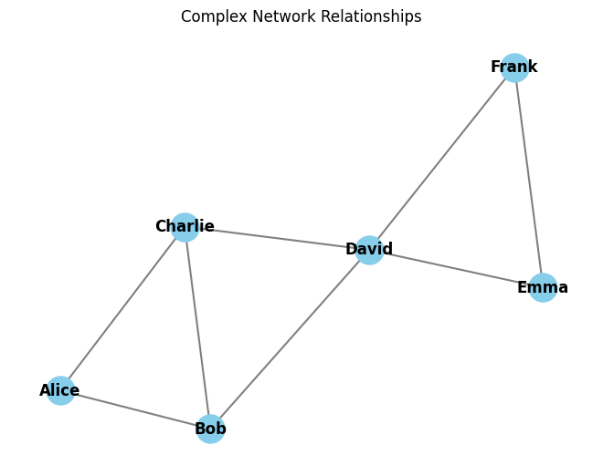
The resulting network plot visually represents the relationships between individuals within the social network.
Interpreting Network Plots:
Interpreting a network plot involves considering the following aspects:
Nodes: Nodes represent individual entities, such as people or objects within the network.
Edges: Edges, often depicted as lines connecting nodes, signify relationships or connections between entities.
Layout: The arrangement of nodes and edges within the plot reflects the structure of the network. Different layout algorithms can reveal various network properties.
Clustering: Patterns of clustering and connectivity can provide insights into the network’s structure.
Network plots are essential for understanding complex relationships and can be applied in diverse fields, including social sciences, biology, and information technology.
8.3: Word Cloud (Visualizing Text Data)
Word clouds are a specialized form of data visualization used to represent text data, specifically word frequency within a corpus or document. They provide an intuitive way to grasp the most common words and their relative importance.
Creating a Word Cloud:
To demonstrate the creation of a word cloud, we will use a synthetic text data sample. This word cloud will visualize word frequency in the provided text.
# Generating synthetic text data
from wordcloud import WordCloud
text_data = "This is a sample text data for creating a word cloud. Word clouds are a fun way to visualize word frequency."
# Creating a word cloud
wordcloud = WordCloud(width=800, height=400, background_color='white').generate(text_data)
plt.figure(figsize=(10, 6))
plt.imshow(wordcloud, interpolation='bilinear')
plt.axis("off")
plt.title('Word Cloud of Text Data')
plt.show()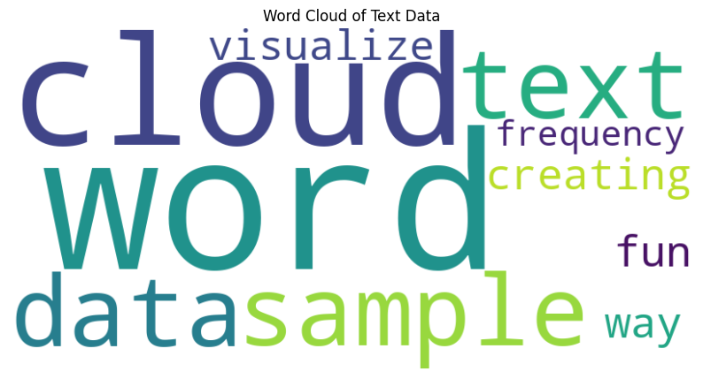
The resulting word cloud visually emphasizes words by size, with more frequent words appearing larger.
Interpreting Word Clouds:
Interpreting a word cloud involves considering the following aspects:
Word Size: The size of each word in the cloud corresponds to its frequency within the text. Larger words are more frequently used.
Color: Word clouds can employ color to further emphasize certain words or categories.
Context: Understanding the context of the word cloud is crucial to extract meaningful insights.
Word clouds are an engaging way to uncover prominent terms within text data, making them valuable in text analysis, content marketing, and sentiment analysis.
9: Advanced Data Visualization
In this section, we will explore specialized data visualization techniques that cater to distinct data analysis needs. These visualizations offer unique insights into specific aspects of data analysis, such as model evaluation and dimensionality reduction.
9.1: ROC Curves and AUC (Model Evaluation)
ROC (Receiver Operating Characteristic) curves and AUC (Area Under the Curve) are powerful tools for evaluating the performance of binary classification models. They provide a visual representation of a model’s ability to discriminate between positive and negative classes over various thresholds.
Creating ROC Curves and Calculating AUC:
To illustrate the use of ROC curves and AUC, we will follow these steps:
- Generate a synthetic dataset for binary classification.
- Split the dataset into training and testing sets.
- Train a logistic regression model.
- Calculate the ROC curve and AUC.
# Generating synthetic binary classification data and training a model
from sklearn.metrics import roc_curve, auc
from sklearn.datasets import make_classification
from sklearn.model_selection import train_test_split
from sklearn.linear_model import LogisticRegression
import matplotlib.pyplot as plt
# Generating synthetic binary classification data
X, y = make_classification(n_samples=1000, n_features=20, random_state=42)
X_train, X_test, y_train, y_test = train_test_split(X, y, test_size=0.2, random_state=42)
# Training a logistic regression model
model = LogisticRegression()
model.fit(X_train, y_train)
y_scores = model.predict_proba(X_test)[:, 1]
# Creating a ROC curve
fpr, tpr, thresholds = roc_curve(y_test, y_scores)
roc_auc = auc(fpr, tpr)
# Plotting the ROC curve
plt.figure(figsize=(10, 6))
plt.plot(fpr, tpr, color='darkorange', lw=2, label='ROC curve (area = %0.2f)' % roc_auc)
plt.plot([0, 1], [0, 1], color='navy', lw=2, linestyle='--')
plt.xlabel('False Positive Rate')
plt.ylabel('True Positive Rate')
plt.title('Receiver Operating Characteristic (ROC) Curve')
plt.legend(loc='lower right')
plt.show()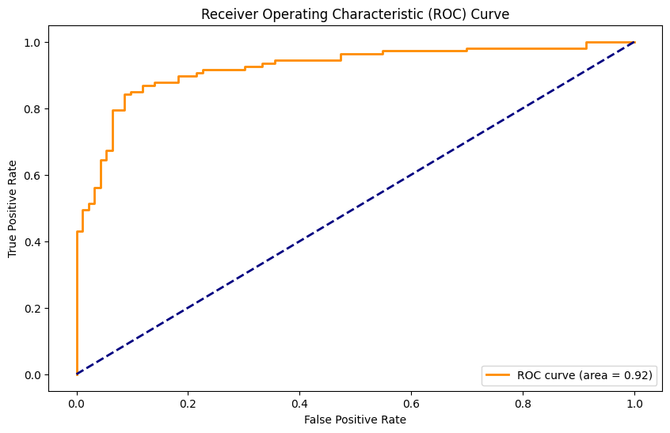
The ROC curve illustrates the trade-off between the true positive rate (sensitivity) and the false positive rate as the classification threshold varies. AUC quantifies the overall model performance, with higher AUC values indicating better classification ability.
Interpreting ROC Curves and AUC:
True Positive Rate (TPR): The TPR represents the proportion of true positive predictions concerning all actual positive instances. It reflects the model’s ability to correctly classify positive cases.
False Positive Rate (FPR): The FPR represents the proportion of false positive predictions concerning all actual negative instances. A low FPR is desired, as it indicates minimal misclassification of negative cases.
ROC Curve Shape: The shape of the ROC curve and its proximity to the top-left corner indicate the model’s performance. A curve that approaches the top-left corner indicates a superior model.
Area Under the Curve (AUC): AUC summarizes the ROC curve’s performance in a single value. It ranges from 0.5 (random classification) to 1.0 (perfect classification). An AUC value greater than 0.5 suggests that the model outperforms random chance.
ROC curves and AUC are invaluable for assessing the quality of binary classification models and selecting the optimal threshold for specific application requirements.
9.2: t-SNE Plots (Dimensionality Reduction)
t-SNE (t-distributed Stochastic Neighbor Embedding) is a dimensionality reduction technique that is particularly useful for visualizing high-dimensional data in lower dimensions while preserving the structure of data clusters. It is an excellent tool for exploring patterns and relationships within complex datasets.
Creating t-SNE Scatter Plots:
To demonstrate the use of t-SNE, we will perform the following steps:
- Generate synthetic high-dimensional data.
- Apply t-SNE to reduce data to two dimensions.
- Create a scatter plot of the reduced data.
# Generating synthetic high-dimensional data and reducing it using t-SNE
from sklearn.manifold import TSNE
import matplotlib.pyplot as plt
# Generating synthetic high-dimensional data
X, y = make_classification(n_samples=100, n_features=50, random_state=42)
# Reducing the data to two dimensions using t-SNE
X_embedded = TSNE(n_components=2, random_state=42).fit_transform(X)
# Creating a t-SNE scatter plot
plt.figure(figsize=(10, 6))
plt.scatter(X_embedded[:, 0], X_embedded[:, 1], c=y, cmap='viridis')
plt.xlabel('t-SNE Dimension 1')
plt.ylabel('t-SNE Dimension 2')
plt.title('t-SNE Scatter Plot')
plt.show()The resulting t-SNE scatter plot provides a simplified representation of the original high-dimensional data while preserving data patterns and clusters.
Interpreting t-SNE Plots:
Clusters: Data points that are close together in the t-SNE scatter plot belong to the same clusters in the high-dimensional space, revealing natural groupings within the data.
Dimensionality Reduction: t-SNE effectively reduces the data’s dimensionality, making it easier to explore and understand complex datasets.
Outliers: Outliers or anomalies may appear as data points that are isolated from the main clusters in the scatter plot.
t-SNE is a valuable tool for data exploration, visualization, and gaining insights into high-dimensional data structures. It is particularly useful in fields such as machine learning, biology, and text analysis.
Although extremely useful for visualizing high-dimensional data, t-SNE plots can sometimes be mysterious or misleading. By exploring how it behaves in simple cases, we can learn to use it more effectively. Refer to this article for more info: How to Use t-SNE Effectively
Conclusion
In this extensive Jupyter notebook, we have explored various data visualization techniques using Matplotlib and Seaborn. We began with basic plots, including line plots, scatter plots, bar plots, and histograms. Then, we delved into statistical plots like box plots, violin plots, and swarm plots. The matrix plots section covered heatmaps and clustermaps. We also explored distribution plots, time series plots, geospatial data visualization, 3D plots, specialized plots, custom visualizations, interactive visualizations, and specialized plots like ROC curves and t-SNE plots.
Data visualization is an integral part of data analysis, helping us gain insights, make informed decisions, and communicate our findings effectively. Choosing the right visualization technique for a given dataset is crucial, and this notebook provides a comprehensive overview to aid Computer Science and Data Science students in their data visualization journey.
Additional Notes
- For interactive visualizations, consider using libraries like Plotly, Bokeh, or Dash.
- To enhance your data visualization skills, practice with real-world datasets and explore more advanced techniques and libraries.
- Always strive for clear and informative visualizations that convey the intended message effectively.